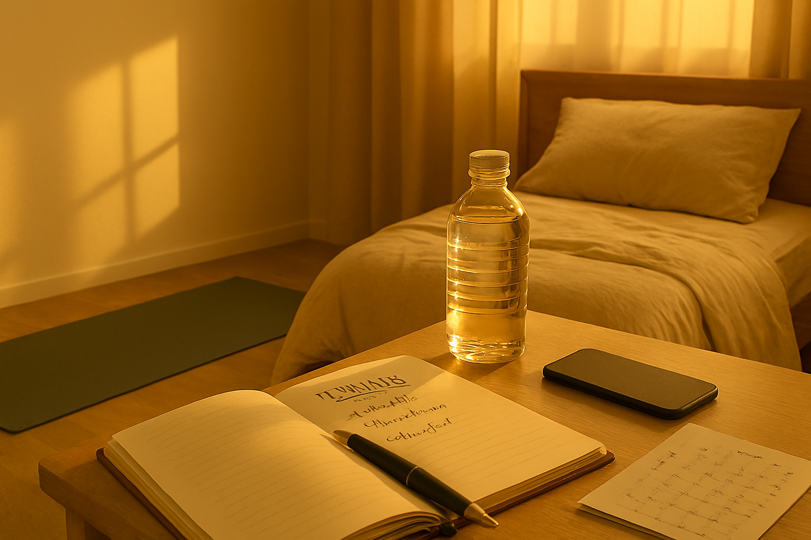

Intro: A Quiet Start
There’s something sacred about the early hours—before the world fully wakes up. Over the past year, I’ve come to appreciate the calm and clarity that a mindful morning routine brings. It’s not perfect, but it’s mine.
What Works for Me
- Water First: I keep a bottle by my bed and drink it before I even check my phone.
- Stretch & Breathe: A few minutes of movement and deep breathing helps me feel grounded.
- Notebook Ritual: I jot down three things I’m grateful for and one intention for the day.
- Quick Plan: I glance at my calendar and mentally prep for what’s ahead.
Final Thoughts
My routine isn’t rigid—it shifts with my mood and schedule. But having a few anchors in place helps me start the day with purpose. If you’re figuring out your own rhythm, start with one small habit and build from there.